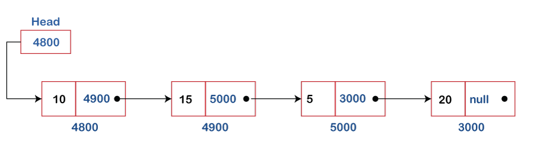
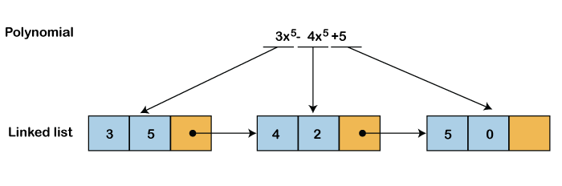
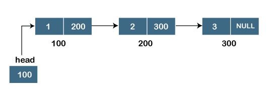
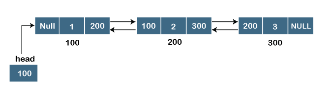
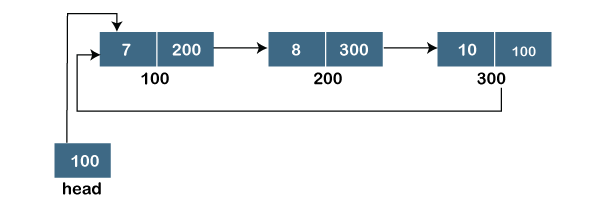
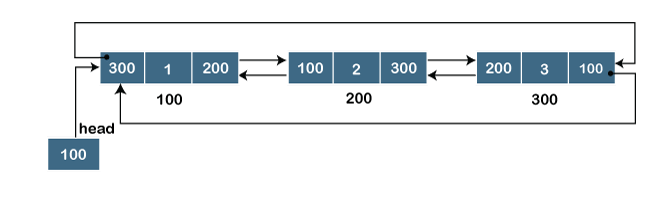

Linked List
What is Linked List?
A linked list is also a collection of elements, but the elements are not stored in a consecutive location.
Suppose a programmer made a request for storing the integer value then size of 4-byte memory block is assigned to the integer value. The programmer made another request for storing 3 more integer elements; then, three different memory blocks are assigned to these three elements but the memory blocks are available in a random location. So, how are the elements connected?.
These elements are linked to each other by providing one additional information along with an element, i.e., the address of the next element. The variable that stores the address of the next element is known as a pointer. Therefore, we conclude that the linked list contains two parts, i.e., the first one is the data element, and the other is the pointer. The pointer variable will occupy 4 bytes which is pointing to the next element.
A linked list can also be defined as the collection of the nodes in which one node is connected to another node, and node consists of two parts, i.e., one is the data part and the second one is the address part, as shown in the below figure:

In the above figure, we can observe that each node contains the data and the address of the next node. The last node of the linked list contains the NULL value in the address part.
How can we declare the Linked list?
The declaration of an array is very simple as it is of single type. But the linked list contains two parts, which are of two different types, i.e., one is a simple variable, and the second one is a pointer variable. We can declare the linked list by using the user-defined data type known as structure.
The structure of a linked list can be defined as:
struct node
{
int data;
struct node *next;
}
Advantages of using a Linked list over Array
The following are the advantages of using a linked list over an array:
- Dynamic data structure:
The size of the linked list is not fixed as it can vary according to our requirements.
- Insertion and Deletion:
Insertion and deletion in linked list are easier than array as the elements in an array are stored in a consecutive location. In contrast, in the case of a linked list, the elements are stored in a random location. The complexity for insertion and deletion of elements from the beginning is O(1) in the linked list, while in the case of an array, the complexity would be O(n). If we want to insert or delete the element in an array, then we need to shift the elements for creating the space. On the other hand, in the linked list, we do not have to shift the elements. In the linked list, we just need to update the address of the pointer in the node.
- Memory efficient:
Its memory consumption is efficient as the size of the linked list can grow or shrink according to our requirements.
- Implementation:
Both the stacks and queues can be implemented using a linked list.
Disadvantages of Linked list
- Memory usage
The node in a linked list occupies more memory than array as each node occupies two types of variables, i.e., one is a simple variable, and another is a pointer variable that occupies 4 bytes in the memory.
- Traversal
In a linked list, the traversal is not easy. If we want to access the element in a linked list, we cannot access the element randomly, but in the case of an array, we can randomly access the element by index. For example, if we want to access the 3rd node, then we need to traverse all the nodes before it. So, the time required to access a particular node is large.
- Reverse traversing
In a linked list, backtracking or reverse traversing is difficult. In a doubly linked list, it is easier but requires more memory to store the back pointer.
Applications of Linked List
- With the help of a linked list, the polynomials can be represented as well as we can perform the operations on the polynomial. We know that polynomial is a collection of terms in which each term contains coefficient and power. The coefficients and power of each term are stored as node and link pointer points to the next element in a linked list, so linked list can be used to create, delete and display the polynomial.

- A sparse matrix is used in scientific computation and numerical analysis. So, a linked list is used to represent the sparse matrix.
- The various operations like student's details, employee's details or product details can be implemented using the linked list as the linked list uses the structure data type that can hold different data types.
- Stack, Queue, tree and various other data structures can be implemented using a linked list.
- The graph is a collection of edges and vertices, and the graph can be represented as an adjacency matrix and adjacency list. If we want to represent the graph as an adjacency matrix, then it can be implemented as an array. If we want to represent the graph as an adjacency list, then it can be implemented as a linked list.
- To implement hashing, we require hash tables. The hash table contains entries that are implemented using linked list.
- A linked list can be used to implement dynamic memory allocation. The dynamic memory allocation is the memory allocation done at the run-time.
Types of Linked List
- Singly Linked list
- Doubly Linked list
- Circular Linked list
- Doubly Circular Linked list
Singly Linked list
It is the commonly used linked list in programs. If we are talking about the linked list, it means it is a singly linked list. The singly linked list is a data structure that contains two parts, i.e., one is the data part, and the other one is the address part, which contains the address of the next or the successor node. The address part in a node is also known as a pointer.
Suppose we have three nodes, and the addresses of these three nodes are 100, 200 and 300 respectively. The representation of three nodes as a linked list is shown in the below figure:

We can observe in the above figure that there are three different nodes having address 100, 200 and 300 respectively. The first node contains the address of the next node, i.e., 200, the second node contains the address of the last node, i.e., 300, and the third node contains the NULL value in its address part as it does not point to any node. The pointer that holds the address of the initial node is known as a head pointer.
The linked list, which is shown in the above diagram, is known as a singly linked list as it contains only a single link. In this list, only forward traversal is possible; we cannot traverse in the backward direction as it has only one link in the list.
Representation of the node in a singly linked list
struct node
{
int data;
struct node *next;
}
Doubly linked list
As the name suggests, the doubly linked list contains two pointers. We can define the doubly linked list as a linear data structure with three parts: the data part and the other two address part. In other words, a doubly linked list is a list that has three parts in a single node, includes one data part, a pointer to its previous node, and a pointer to the next node.
Suppose we have three nodes, and the address of these nodes are 100, 200 and 300, respectively. The representation of these nodes in a doubly-linked list is shown below:

As we can observe in the above figure, the node in a doubly-linked list has two address parts; one part stores the address of the next while the other part of the node stores the previous node's address. The initial node in the doubly linked list has the NULL value in the address part, which provides the address of the previous node.
Representation of the node in a doubly linked list
struct node
{
int data;
struct node *next;
struct node *prev;
}
In the above representation, we have defined a user-defined structure named a node with three members, one is data of integer type, and the other two are the pointers, i.e., next and prev of the node type. The next pointer variable holds the address of the next node, and the prev pointer holds the address of the previous node. The type of both the pointers, i.e., next and prev is struct node as both the pointers are storing the address of the node of the struct node type.
Circular linked list
A circular linked list is a variation of a singly linked list. The only difference between the singly linked list and a circular linked list is that the last node does not point to any node in a singly linked list, so its link part contains a NULL value. On the other hand, the circular linked list is a list in which the last node connects to the first node, so the link part of the last node holds the first node's address. The circular linked list has no starting and ending node. We can traverse in any direction, i.e., either backward or forward. The diagrammatic representation of the circular linked list is shown below:
struct n.ode
{
int data;
struct node *next;
}
A circular linked list is a sequence of elements in which each node has a link to the next node, and the last node is having a link to the first node. The representation of the circular linked list will be similar to the singly linked list, as shown below:

Doubly Circular linked list
The doubly circular linked list has the features of both the circular linked list and doubly linked list.

The above figure shows the representation of the doubly circular linked list in which the last node is attached to the first node and thus creates a circle. It is a doubly linked list also because each node holds the address of the previous node also. The main difference between the doubly linked list and doubly circular linked list is that the doubly circular linked list does not contain the NULL value in the previous field of the node. As the doubly circular linked contains three parts, i.e., two address parts and one data part so its representation is similar to the doubly linked list.
struct node
{
int data;
struct node *next;
struct node *prev;
}